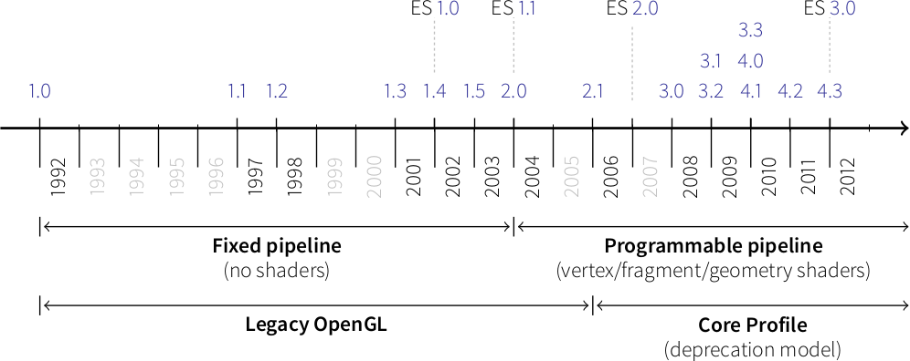
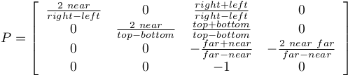
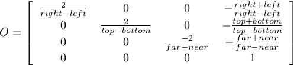
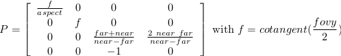

Modern OpenGL#
OpenGL has evolved over the years and a big change occurred in 2003 with the introduction of the dynamic pipeline (OpenGL 2.0), i.e. the use of shaders that allow to have direct access to the GPU.
Before this version, OpenGL was using a fixed pipeline and you may still find a lot of tutorials that still use this fixed pipeline. This introduces some radical changes in the way of programming OpenGL and makes it both more difficult to program but far more powerful.
Shaders#
Note
The shader language is called glsl. There are many versions that goes from 1.0 to 1.5 and subsequents version get the number of OpenGL version. Last version is 4.4 (February 2014).
Shaders are pieces of program (using a C-like language) that are build onto the GPU and executed during the rendering pipeline. Depending on the nature of the shaders (there are many types depending on the version of OpenGL you’re using), they will act at different stage of the rendering pipeline. To simplify this tutorial, we’ll use only vertex and fragment shader as shown below:

A vertex shader acts on vertices and is supposed to output the vertex
position (→ gl_Position) on the viewport (i.e. screen). A fragment shader
acts at the fragment level and is supposed to output the color
(→ gl_FragColor) of the fragment. Hence, a minimal vertex shader is:
void main()
{
gl_Position = vec4(0.0,0.0,0.0,1.0);
}
while a minimal fragment shader would be:
void main()
{
gl_FragColor = vec4(0.0,0.0,0.0,1.0);
}
These two shaders are not very useful since the first will transform any vertex into the null vertex while the second will output the black color for any fragment. We’ll see later how to make them to do more useful things.
One question remains: when are those shaders executed, exactly? The vertex shader is executed for each vertex that is given to the rendering pipeline (we’ll see what does that mean exactly later) and the fragment shader is executed on each fragment that is generated after the vertex stage. For example, in the simple figure above, the vertex would be called 3 times, once for each vertex (1,2 and 3) while the fragment shader would be executed 21 times, once for each fragment (pixel).
Buffers#
We explained earlier that the vertex shader act on the vertices. The question is thus where do those vertices comes from? The idea of modern GL is that vertices are stored on the GPU and needs to be uploaded (only once) to the GPU before rendering. The way to do that is to build buffers onto the CPU and to send them onto the GPU. If your data does not change, no need to upload it again. That is the big difference with the previous fixed pipeline where data were uploaded at each rendering call (only display lists were built into GPU memory).
But what is the structure of a vertex? OpenGL does not assume anything about your vertex structure and you’re free to use as many information you may need for each vertex. The only condition is that all vertices from a buffer have the same structure (possibly with different content). This again is a big difference with the fixed pipeline where OpenGL was doing a lot of complex rendering stuff for you (projections, lighting, normals, etc.) with an implicit fixed vertex structure. Now you’re on your own…
Good news is that you’re now free to do virtually anything you want.
Bad news is that you have to program everything, even the most basic things like projection and lighting.
Let’s take a simple example of a vertex structure where we want each vertex to hold a position and a color. The easiest way to do that in python is to use a structured array using the numpy library:
data = numpy.zeros(4, dtype = [ ("position", np.float32, 3),
("color", np.float32, 4)] )
We just created a CPU buffer with 4 vertices, each of them having a
position (3 floats for x,y,z coordinates) and a color (4 floats for
red, blue, green and alpha channels). Note that we explicitly chose to have 3
coordinates for position but we may have chosen to have only 2 if were to
work in two-dimensions only. Same holds true for color. We could have used
only 3 channels (r,g,b) if we did not want to use transparency. This would save
some bytes for each vertex. Of course, for 4 vertices, this does not really
matter but you have to realize it will matter if you data size grows up to
one or ten million vertices.
Uniform, attribute, varying#
At this point in the tutorial, we know what are shaders and buffers but we still need to explain how they may be connected together. So, let’s consider again our CPU buffer:
data = numpy.zeros(4, dtype = [ ("position", np.float32, 2),
("color", np.float32, 4)] )
We need to tell the vertex shader that it will have to handle vertices where a position is a tuple of 3 floats and color is a tuple of 4 floats. This is precisely what attributes are meant for. Let us change slightly our previous vertex shader:
attribute vec2 position;
attribute vec4 color;
void main()
{
gl_Position = vec4(position, 0.0, 1.0);
}
This vertex shader now expects a vertex to possess 2 attributes, one named
position and one named color with specified types (vec3 means tuple of
3 floats and vec4 means tuple of 4 floats). It is important to note that even
if we labeled the first attribute position, this attribute is not yet bound
to the actual position in the numpy array. We’ll need to do it explicitly
at some point in our program and there is no automagic that will bind the numpy
array field to the right attribute, you’ll have to do it yourself, but we’ll
see that later.
The second type of information we can feed the vertex shader are the uniforms
that may be considered as constant values (across all the vertices). Let’s say
for example we want to scale all the vertices by a constant factor scale,
we would thus write:
uniform float scale;
attribute vec2 position;
attribute vec4 color;
void main()
{
gl_Position = vec4(position*scale, 0.0, 1.0);
}
Last type is the varying type that is used to pass information between the vertex stage and the fragment stage. So let us suppose (again) we want to pass the vertex color to the fragment shader, we now write:
uniform float scale;
attribute vec2 position;
attribute vec4 color;
varying vec4 v_color;
void main()
{
gl_Position = vec4(position*scale, 0.0, 1.0);
v_color = color;
}
and then in the fragment shader, we write:
varying vec4 v_color;
void main()
{
gl_FragColor = v_color;
}
The question is: what is the value of v_color inside the fragment shader?
If you look at the figure that introduced the gl pipeline, we have 3 vertices and 21
fragments. What is the color of each individual fragment?
The answer is the interpolation of all 3 vertices color. This interpolation is made using distance of the fragment to each individual vertex. This is a very important concept to understand. Any varying value is interpolated between the vertices that compose the elementary item (mostly, line or triangle).
Transformations#
Projection matrix#
We need first to define what do we want to view, that is, we need to define a viewing volume such that any object within the volume (even partially) will be rendered while objects outside won’t. On the image below, the yellow and red spheres are within the volume while the green one is not and does not appear on the projection.

There exist many different ways to project a 3D volume onto a 2D screen but we’ll only use the perspective projection (distant objects appear smaller) and the orthographic projection which is a parallel projection (distant objects have the same size as closer ones) as illustrated on the image above. Until now (previous section), we have been using implicitly an orthographic projection in the z=0 plane.
Depending on the projection we want, we will use one of the two projection matrices below:
Perspective matrix
Orthographic matrix
At this point, it is not necessary to understand how these matrices were built. Suffice it to say they are standard matrices in the 3D world. Both suppose the viewer (=camera) is located at position (0,0,0) and is looking in the direction (0,0,1).
There exists a second form of the perspective matrix that might be easier to manipulate. Instead of specifying the right/left/top/bottom planes, we’ll use field of view in the horizontal and vertical direction:
Perspective matrix
where fovy specifies the field of view angle, in degrees, in the y
direction and aspect specifies the aspect ratio that determines the field
of view in the x direction.
Model and view matrices#
We are almost done with matrices. You may have guessed that the above matrix requires the viewing volume to be in the z direction. We could design our 3D scene such that all objects are withing this direction but it would not be very convenient. So instead, we’ll use a view matrix that will map the the world space to camera space. This is pretty much as if we were orienting the camera at a given position and look toward a given direction. In the meantime, we can further refine the whole pipeline by providing a model matrix that will map the object’s local coordinate space into world space. For example, this will be useful for rotating an object around its center. To sum up, we need:
Model matrix maps from an object’s local coordinate space into world space
View matrix maps from world space to camera space
Projection matrix maps from camera to screen space
Learning modern OpenGL#
There exist a lot of resources on the web related to OpenGL. I only mention here a few of them that deals with the dynamic rendering pipeline. If you’ve found other resources, make sure they deal with the dynamic rendering pipeline and not the fixed one.
An intro to modern OpenGL#
OpenGL has been around a long time and from reading all the accumulated layers of documentation out there on the Internet, it’s not always clear what parts are historic and what parts are still useful and supported on modern graphics hardware. It’s about time for a new OpenGL introduction that walks through the parts that are still relevant today.
Learning Modern 3D Graphics Programming#
The book Learning Modern 3D Graphics Programming by Jason L. McKesson is intended to teach you how to be a graphics programmer. It is not aimed at any particular graphics field; it is designed to cover most of the basics of 3D rendering. So if you want to be a game developer, a CAD program designer, do some computer visualization, or any number of things, this book can still be an asset for you. This does not mean that it covers everything there is about 3D graphics. Hardly. It tries to provide a sound foundation for your further exploration in whatever field of 3D graphics you are interested in.
OpenGL ES 2.0 documentation#
OpenGL ES 2.0 is defined relative to the OpenGL 2.0 specification and emphasizes a programmable 3D graphics pipeline with the ability to create shader and program objects and the ability to write vertex and fragment shaders in the OpenGL ES Shading Language. VisPy is based on OpenGL ES 2.0 because it gives access to the programmable pipeline while keeping overall complexity tractable.